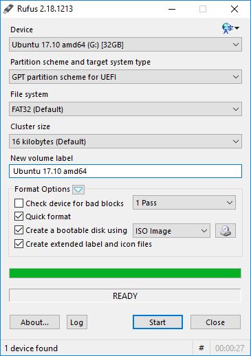
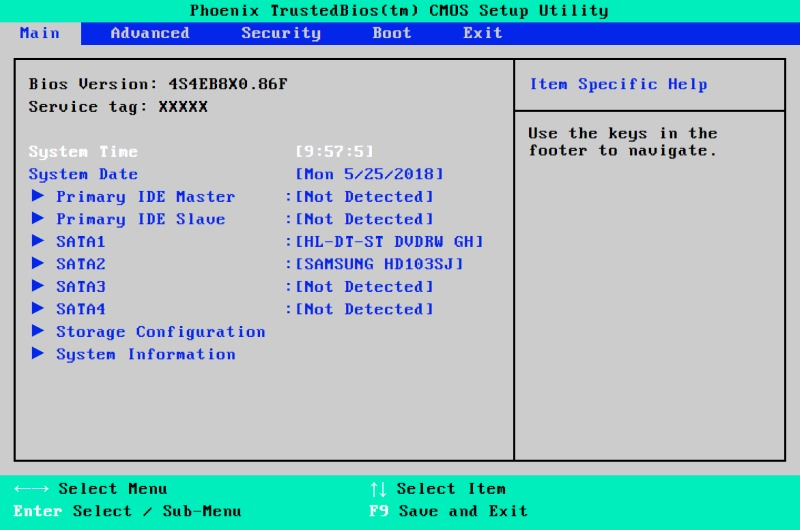
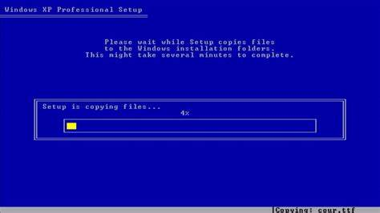
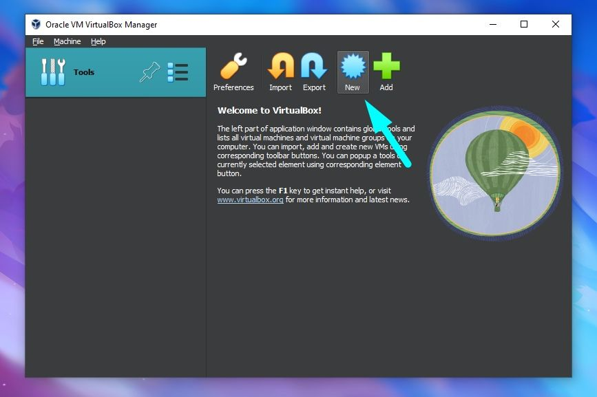
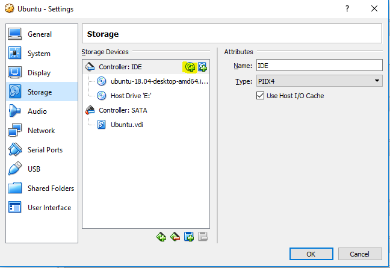
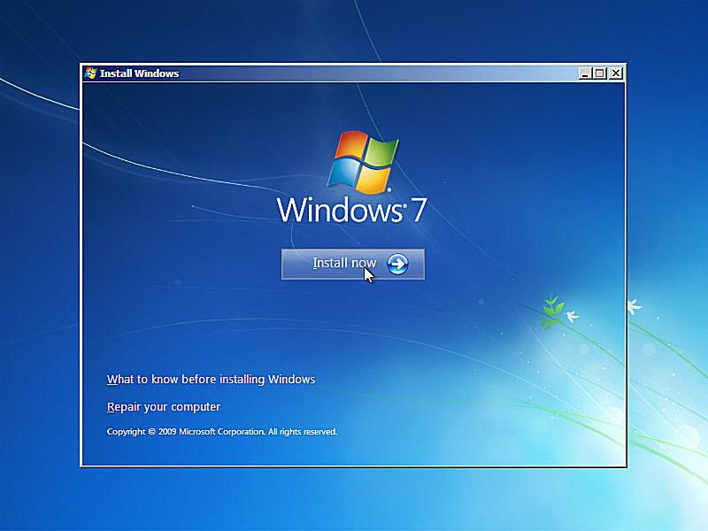

Jeśli coś pójdzie nie tak, to zawsze winny jest VirtualBox! 😅
Wybierz jedną z poniższych opcji, aby dowiedzieć się, jak zainstalować wybrany system Windows na fizycznym komputerze lub na maszynie wirtualnej (np. VirtualBox).
1. Instalacja na komputerze fizycznymNajpierw musisz przygotować nośnik instalacyjny (płytę DVD lub pendrive) z systemem Windows. Jeśli masz plik ISO, możesz użyć narzędzi takich jak Rufus do utworzenia bootowalnego pendrive'a.
Po przygotowaniu nośnika, uruchom komputer i wejdź do BIOS-u (zwykle przez naciśnięcie klawisza F2 lub Delete). W ustawieniach BIOS-u zmień kolejność bootowania tak, aby komputer startował z napędu optycznego lub USB, w zależności od tego, z czego instalujesz.
Po uruchomieniu komputera z nośnika instalacyjnego, postępuj zgodnie z instrukcjami na ekranie. Wybierz preferowany język, formatowanie partycji (jeśli chcesz przeprowadzić świeżą instalację) i rozpocznij instalację.
2. Instalacja na maszynie wirtualnej (VirtualBox)Pobierz i zainstaluj VirtualBox z oficjalnej strony: https://www.virtualbox.org. To darmowe oprogramowanie pozwala na tworzenie wirtualnych maszyn na twoim komputerze.
Po zainstalowaniu VirtualBox, uruchom go i kliknij przycisk "Nowa". Podaj nazwę systemu, wybierz odpowiednią wersję (np. Windows 10) i przydziel odpowiednią ilość pamięci RAM. Zdefiniuj również wirtualny dysk twardy (najlepiej VDI) i przydziel odpowiednią przestrzeń dyskową.
W ustawieniach nowej maszyny wirtualnej, przejdź do sekcji "Płyta optyczna" i wybierz plik ISO z systemem, który chcesz zainstalować. Następnie uruchom maszynę wirtualną.
Po uruchomieniu maszyny wirtualnej, rozpocznij instalację systemu Windows tak, jak na fizycznym komputerze. Wybierz język, utwórz partycje i rozpocznij instalację. W przypadku VirtualBoxa, cały proces odbywa się w oknie wirtualnej maszyny.
